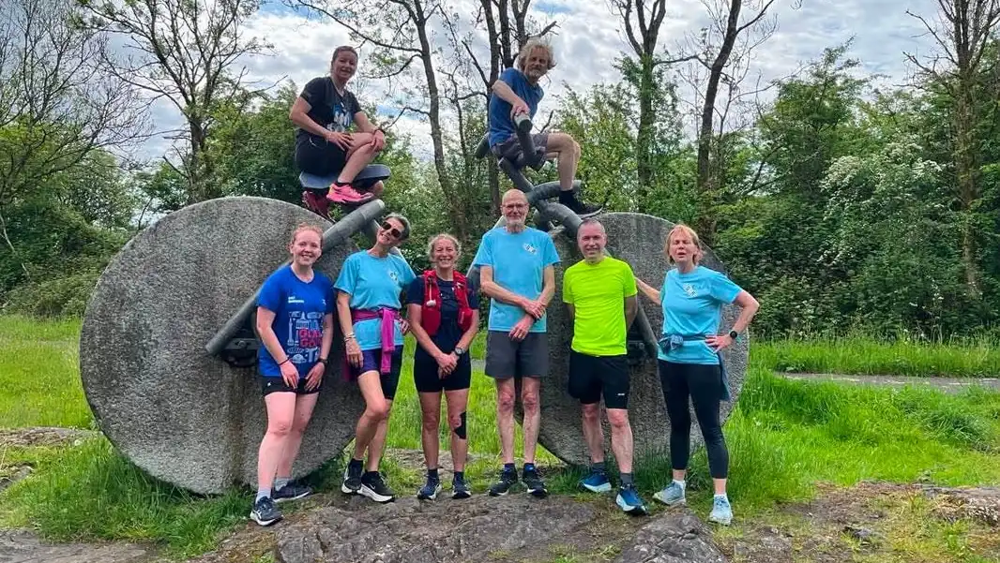

Skip to content
GVR
Garnock Valley
Runners
Menu
Home
Meet locations
About us
Run with us
North Ayrshire running club
Weekly Runs
Week beginning:
Wednesday:
Sunday:
Find the next run
New to the group?
→
